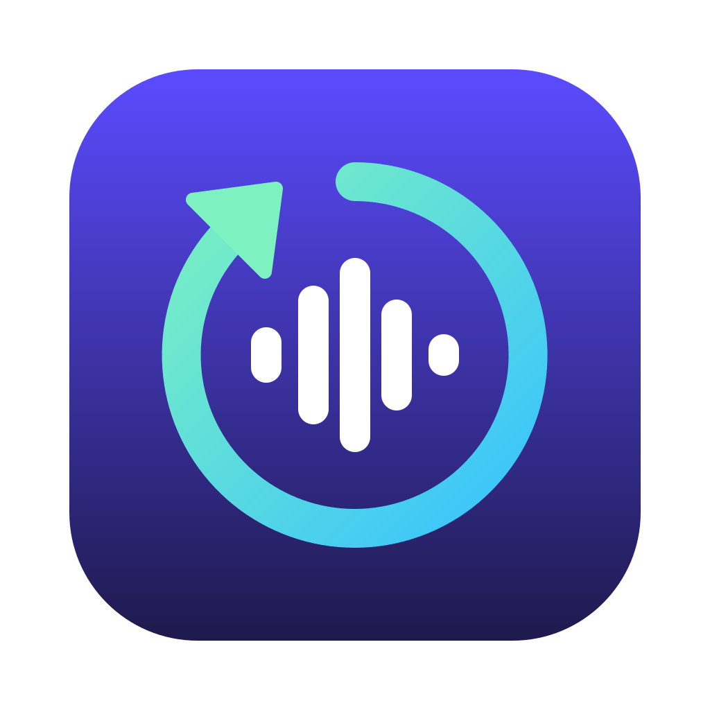

recordr
Virtual audio inputs for your Mac. No driver.
View on GitHubYour apps, as a microphone
recordr takes the sound from your apps and microphones and turns it into a new input device. Zoom, OBS, Logic or any other app can then pick it as if it were a microphone. It uses Core Audio process taps, so there's nothing to install in the system. Requires macOS 14.2 or later.
- Capture any app Spotify, Chrome, a game: pick the apps whose sound goes into the device.
- Mix in microphones Add physical inputs as extra channels.
- All system audio Or capture everything at once.
- Mute on speakers Send an app to the device without hearing it yourself.
- Live meters L/R level bars on every source.
- Always there Devices are saved and restart with your Mac.
Download
Apple Silicon. Open the .dmg and drag recordr into Applications. It isn't notarized yet, so the first time go to System Settings → Privacy & Security and click Open Anyway.
Quick guideFour steps
- Create a device. Click + New device in the sidebar and give it a name.
- Pick sources. Click the app and input tiles you want, or check All system audio. Check Mute sources on speakers to stop hearing them. Selected apps that aren't running appear under Closed apps; click one to remove it.
- Start it. Click ▶ Start. The device shows up as an input in every app.
- Use it. In Zoom, OBS or your DAW, choose the device's name as the microphone.
The first time, macOS asks for Audio Capture and Microphone access. If a device is silent, check System Settings → Privacy & Security → Screen & System Audio Recording.
Command lineFrom the terminal
First click ⚙ Settings → Install command line tool in the app. Then:
recordr list # apps, devices and inputs
recordr run Podcast --app com.spotify.client # Spotify → "Podcast" input
recordr run Call --app com.google.Chrome --device BuiltInMicrophoneDevice
recordr run Everything --system --mute # all system audio, silent on speakersThe device lives until you press Ctrl-C. From a terminal, macOS asks for the permissions on behalf of your terminal app (Terminal, iTerm…), not recordr.
LimitsGood to know
- An app appears only after it has played sound. Apps launched after you start a device need a stop and start.
- Microphones are added as extra channels, not mixed into the stereo pair.
- No per-source volume or channel mapping yet.